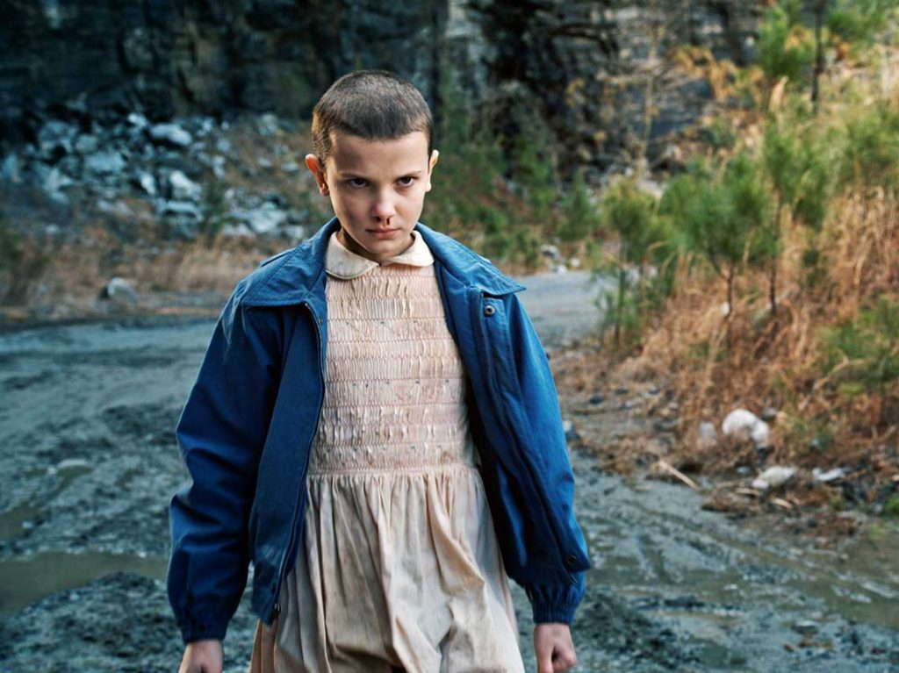

Bem vindo ao mundo de Stranger Things!!
O mundo está cada vez mais invertido
Stranger Things pode ser uma das séries mais populares da atualidade,mas como esse fenômeno surgiu? Muito do sucesso da Netflix está sim atrelado à ST, uma série dos até então desconhecidos irmãos Duffer, que contava com um elenco nada badalado, tendo Winona Ryder como sua pricipal esperança de atrair espectadores.
Friends don't lie
